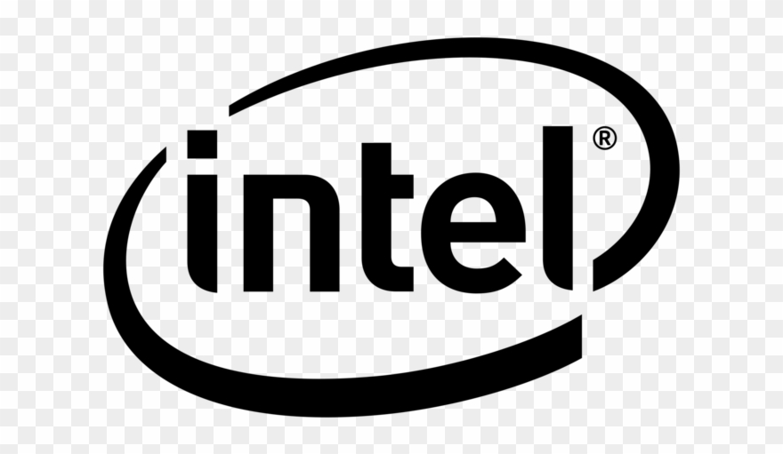

NICE TO MEET YOU...
My name is Brennen and I am a computer science and mathematics student at the University of Kentucky. I want to use engineering and science to help
other people. Because of this, I have vaguely defined career goals of working in a position that will allow me to see my product be used to make
the world a better place, not a worse one. Mainly I find my passion in biomedical fields of work, finding inspiration in the idea of my work being
used to save lives. But I am also very interested in using my expertise to help protect the world from climate change. To summarize it simply,
if there is an opportunity to better human life; I want to be apart of it.
I'm a Wildcat...
 |
University of Kentucky
B.S. Computer Science and Mathematics Class of 2023 (expected) |
Work Experience:
|
Twitch,Engineering Intern
(June 2021 - Aug 2021)
Part of the 2021 summer engineering intern cohort. Working on the emerging markets mobile streaming services team. |
|  |
Intel Corporation, Controller Integration Engineering Intern
(Oct 2020 - May 2021)
As an intern it was my responsibility to learn and fully understand the FPGA based simulation environment. This involved intenstive projects that involved running and writing emulation scripts in a C based Simics environment. I was also responsible for automating several important testing processes which helped streamline development in the department. |
|
University of Kentucky Department of Communication, Technical Developer
(May 2019 - July 2020)
My role as a technical developer is to enable researchers through building various data gathering applications. On a day to day basis I can be doing anything from wrangling data with Python to building useful web applications and stunning data visualizations with PHP, Drupal, and JavaScript. My secondary role as a technical developer is to serve as a first responder for any technical issues within our department. |
 |
Change Force Corporation, Web Developer
(October 2017 - May 2018)
As the sole web developer on our small team my job was to roll out a fully functional first website for the non-profit using mostly Wordpress This position also allowed me to tinker with PHP for the first time and also CRM tools and SQL the most beneficial part of this position was being able to learn how to communicate technical information with a non-technical team. |
Research Experience:
 |
Institute for Sustainable Manufacturing, Research Assistant
(Jan 2021 - Present)
Worked with Dr. Peng Wang developing a siamese convolutional neural network to process thermal imaging collected from metal-based additive manufacturing processes. The network was developed to automatically characterize the images as well as recognize characteristics such as porosity, grain size, and direction, melt pool depth, as well as other microstructural features. |
|
University of Kentucky College of Engineering, Biomedical Imaging Lab Assistant
(March 2020 - Oct 2020)
In my research I have been focused on improving the efficiency of a spectroscopy imaging device though the use of CUDA based GPU Acceleration. Additionally, I have been pursuing a machine learning project to use a long short term memory neural network to map cerebal bloodflow data from our device to intercranial pressure using Pytorch. |
|
University of Kentucky Cancer Center, Bioinformatics Research Assistant
(August 2018 - December 2018)
While working as a member of the lab I got to work within a Linux work environment which allowed me to learn how to harness the power of unix-based operating systems. My main role on the team was to focus on learning as much about programming as I could through the use of weekly code critiques and programming projects based around bioinformatics. The projects I contributed were written entirely in Python but also required me to read over and comprehend codebases written in other languages such as Java. |